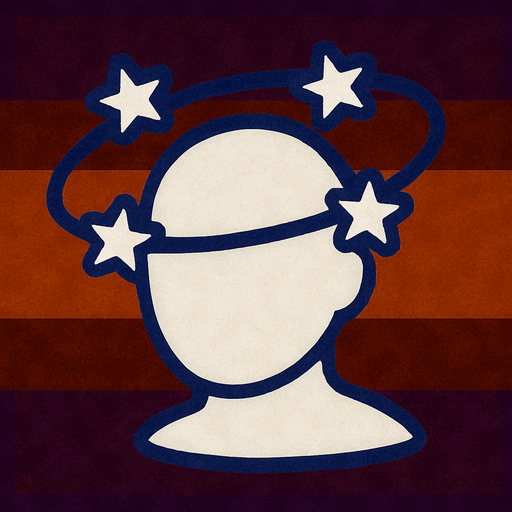

Voici la liste des afflictions pouvant affecter vos personnages pendant leur aventure.
À terre
 Affliction
Affliction
Tant que vous avez l'affliction À terre, vous êtes sujet aux effets suivants.
Déplacement restreint
Vos seules options de déplacements sont de ramper ou de dépenser un montant de déplacement égal à la moitié de votre vitesse (arrondi à l'inférieur) pour vous redresser et mettre fin à l'état. Si votre vitesse est égale à 0, vous ne pouvez pas vous redresser.
Attaques affectées
Vous avez désavantage sur vos jets d'attaque. Un jet d'attaque contre vous a l'avantage si l'attaquant est à 1.5 mètre de vous. Sinon, ce jet d'attaque a désavantage.
Agrippé
Affliction
Tant que vous avez l'affliction Agrippé, vous êtes sujet aux effets suivants.
Vitesse nulle
Votre vitesse est réduite à 0 et ne peut plus augmenter.
Attaques affectées
Vous avez désavantage aux jets d'attaque contre toute cible qui n'est pas la créature vous agrippant.
Déplaçable
La créature qui vous agrippe peut vous traîner ou vous porter lorsqu'elle se déplace, mais chaque 1.5 mètre de déplacement lui coûte 1.5 mètre de plus, sauf si vous êtes de taille Minuscule, ou de deux tailles de moins que la créature.
Assourdi
Affliction
Tant que vous avez l'affliction Assourdi, vous êtes sujet aux effets suivants.
N'entends rien
Vous n'entendez rien et échouez automatiquement tout test de caractéristique impliquant l'ouïe.
Aveuglé
Affliction
Tant que vous avez l'affliction Aveuglé, vous êtes sujet aux effets suivants.
Ne peut voir
Vous ne voyez rien et échouez automatiquement tout test qui requiert votre vision.
Attaques affectées
Les jets d'attaque contre vous ont l'avantage, tandis que les vôtres ont désavantage.
Bras liés
Affliction
Tant que vous avez l'affliction Bras liés, vous êtes sujet aux effets suivants.
Incapacité gestuelle
Vous ne pouvez pas utiliser d’attaques ou de capacités nécessitant l’usage de vos bras.
Sorts restreints
Vous ne pouvez pas lancer de sorts nécessitant des composantes somatiques.
Jets de sauvegarde affectés
Vous subissez un malus de -4 aux jets de caractéristique et aux jets de sauvegarde basés sur la Force.
Charmé
Affliction
Tant que vous avez l'affliction Charmé, vous êtes sujet aux effets suivants.
Ne peut blesser le charmeur
Vous ne pouvez pas attaquer le charmeur ou le cibler avec des aptitudes causant des dégâts ou des effets magiques.
Avantage social
Le charmeur à l'avantage sur tous les tests pour intéragir avec vous socialement.
Confus
Affliction
Tant que vous avez l'affliction Confus, vous êtes sujet aux effets suivants.
Comportement erratique
Au début de chacun de vos tours, vous devez lancer 1d4 pour déterminer votre comportement.
Attaque incontrôlée
Sur un résultat de 1 ou 2, vous devez utiliser votre action pour vous déplacer vers la créature la plus proche dans un rayon de 4,5 mètres, puis effectuer une seule attaque contre elle. S’il n’y a aucune autre créature à portée, vous devez effectuer cette attaque contre vous-même.
Contrôle partiel
Sur un résultat de 3 ou 4, vous agissez normalement pendant ce tour.
Actions limitées
Vous ne pouvez pas effectuer d'actions bonus, d'actions combos ou de réactions.
Effrayé
Affliction
Tant que vous avez l'affliction Effrayé, vous êtes sujet aux effets suivants.
Tests de caractéristique et attaques affectés
Vous avez désavantage sur vos tests de caractéristiques et jets d'attaque tant que la source de votre peur est dans votre ligne de vue.
Ne peut approcher
Vous ne pouvez pas vous rapprocher de la source de votre peur de votre plein gré.
Empoisonné
Affliction
Tant que vous avez l'affliction Empoisonné, vous êtes sujet aux effets suivants.
Dégâts progressifs
Au début de chacun de vos tours, vous subissez un montant de dégâts déterminé par la source du poison.
Endormi
Affliction
Tant que vous avez l'affliction Endormi, vous êtes sujet aux effets suivants.
Sommeil magique
Vous êtes plongé dans un sommeil anormal et irrésistible.
Neutralisé
Vous êtes neutralisé.
Vitesse nulle
Votre vitesse est réduite à 0 et ne peut plus augmenter.
Attaques affectées
Les jets d'attaque contre vous ont l'avantage.
Jets de sauvegarde affectés
Vous échouez automatiquement aux jets de sauvegarde de Force et de Dextérité.
Coup critique automatique
La première attaque qui vous touche est automatiquement un coup critique et vous réveille immédiatement.
Entravé
Affliction
Tant que vous avez l'affliction Entravé, vous êtes sujet aux effets suivants.
Vitesse nulle
Votre vitesse est réduite à 0 et ne peut plus augmenter.
Attaques affectées
Les jets d'attaque contre vous ont l'avantage, et vos jets d'attaque ont désavantage.
Jets de sauvegarde affectés
Vous avez désavantage sur les jets de sauvegarde de Dextérité.
Épuisement
État
Lorsque vous êtes affecté par l'état Épuisement, vous subissez les effets suivants :
Niveaux d’Épuisement
Cette condition est cumulative. Chaque fois que vous la recevez, vous gagnez 1 niveau d’Épuisement. Vous mourrez si votre niveau d’Épuisement atteint 6.
Tests de d20 affectés
Lorsque vous effectuez un test de d20, le jet est réduit de 2 × votre niveau d’Épuisement.
Jets de précision affectés
Lorsque vous effectuez un jet de précision, le jet est réduit de 1 × votre niveau d’Épuisement.
Vitesse réduite
Votre vitesse est réduite d’un nombre de mètres égal à 1,5 × votre niveau d’Épuisement.
Suppression des niveaux d’Épuisement
Terminer un long repos réduit votre niveau d’Épuisement de 1. Lorsque votre niveau d’Épuisement atteint 0, la condition prend fin.

Étourdi
Affliction
Tant que vous avez l'affliction Étourdi, vous êtes sujet aux effets suivants.
Neutralisé
Vous êtes neutralisé.
Attaques affectées
Les jets d'attaque contre vous ont l'avantage.
Jets de sauvegarde affectés
Vous échouez automatiquement aux jets de sauvegarde de Force et Dextérité.
Inconscient
Affliction
Tant que vous avez l'affliction Inconscient, vous êtes sujet aux effets suivants.
Inerte
Vous êtes affectés par les états neutralisé et à terre, et vous lâchez ce que vous tenez. Lorsque cet état prend fin, vous êtes toujours À terre.
Vitesse nulle
Votre vitesse est réduite à 0 et ne peut plus augmenter.
Attaques affectées
Les jets d'attaque contre vous ont l'avantage.
Jets de sauvegarde affectés
Vous échouez automatiquement aux jets de sauvegarde de Force et Dextérité.
Coups critique automatiques
Tout jet d'attaque contre vous qui vous atteint est un coup critique si l'attaquant est à 1.5 mètre de vous ou moins.
Invisible
État
Tant que vous avez l'état Invisible, vous êtes sujet aux effets suivants.
Surprise
Si vous êtes Invisible au moment de l'initiative, vous agissez en premier.
Caché
Vous n'êtes affectés par aucun effet qui requiert que la cible soit visible, sauf si l'utilisateur de cet effet peut vous voir. Tout équipement que vous portez sur vous ou dans vos mains est également caché.
Attaques affectées
Les jets d'attaque contre vous ont désavantage, et vos jets d'attaque ont l'avantage. Si une créature peut vous voir, cet effet ne s'applique pas contre elle.
Jambes liées
Affliction
Tant que vous avez l'affliction Jambes liées, vous êtes sujet aux effets suivants.
Incapacité motrice
Vous ne pouvez pas utiliser d’attaques ou de capacités nécessitant l’usage de vos jambes.
Vitesse nulle
Votre vitesse est réduite à 0. Vous perdez également la capacité de voler.
Jets de sauvegarde affectés
Vous échouez automatiquement aux tests de caractéristique et aux jets de sauvegarde de Dextérité nécessitant l’usage de vos jambes.
Maudit
Affliction
Tant que vous avez l'affliction Maudit, vous êtes sujet aux effets suivants.
Dégâts réduits
Lorsque vous infligez des dégâts avec une attaque, le plus grand nombre obtenu sur les dés de dégâts est retiré du total.
Retour de fléau
Les dégâts ainsi retirés vous sont infligés comme des dégâts du même type.
Neutralisé
Affliction
Tant que vous avez l'affliction Neutralisé, vous êtes sujet aux effets suivants.
Inactif
Vous ne pouvez pas effectuer d'action, d'action bonus, d'action combo, d'action complexe, ou de réaction.
Pas de concentration
Votre concentration est brisée.
Sans voix
Vous ne pouvez pas parler.
Surpris
Si vous êtes Neutralisé au moment de l'initiative, vous êtes considéré comme étant pris par surprise.
Paralysé
Affliction
Tant que vous avez l'affliction Paralysé, vous êtes sujet aux effets suivants.
Vitesse affectée
Votre vitesse est réduite de moitié.
Actions limitées
Vous ne pouvez pas effectuer d'actions bonus, d'actions combo, ou de réactions.
Pétrifié
Affliction
Tant que vous avez l'affliction Pétrifié, vous êtes sujet aux effets suivants.
Transformé en substance inanimée
Vous êtes transformé, ainsi que tout objet non-magique que vous portez sur vous et dans vos mains, en une substance inanimée solide (habituellement de la pierre). Votre poids est multiplié par 10, et vous ne vieillissez plus.
Neutralisé
Vous êtes neutralisé.
Vitesse nulle
Votre vitesse est réduite à 0 et ne peut plus augmenter.
Attaques affectées
Les jets d'attaque contre vous ont l'avantage.
Jets de sauvegarde affectés
Vous échouez automatiquement aux jets de sauvegarde de Force et Dextérité.
Résistant
Vous gagnez une résistance à tous les types de dégâts.
Immunité au poison
Vous êtes immunisé à l'état empoisonné.
Tête liée
Affliction
Tant que vous avez l'affliction Tête liée, vous êtes sujet aux effets suivants.
Incapacité verbale
Vous ne pouvez pas utiliser d’attaques ou de capacités nécessitant l’usage de votre bouche ou de votre tête.
Sorts restreints
Vous ne pouvez pas lancer de sorts nécessitant des composantes verbales.
Jets de sauvegarde affectés
Vous subissez un malus de -4 aux jets de caractéristique et aux jets de sauvegarde basés sur l’Intelligence ou la Sagesse.